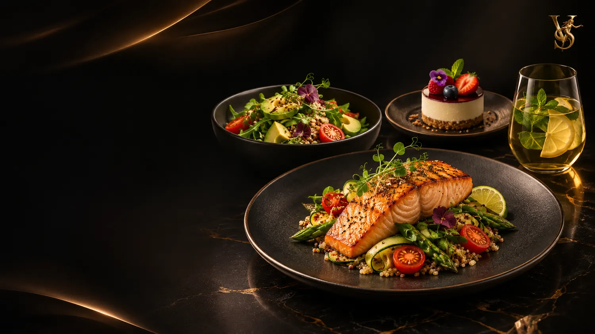
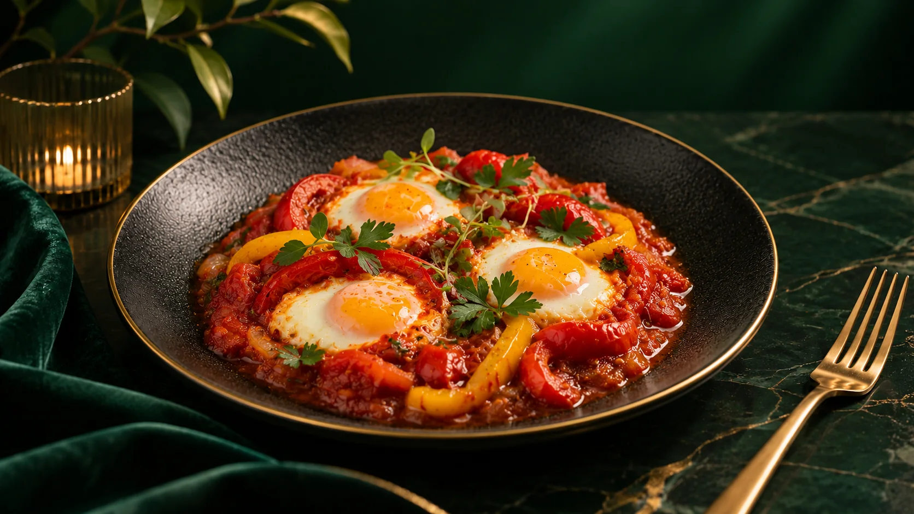
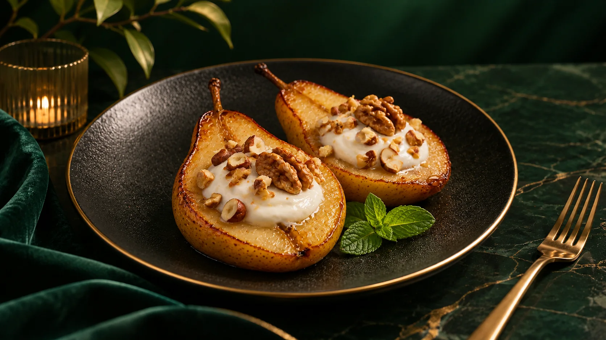

Укажите параметры тела, повседневную активность, цель и предпочтения.
АВТОРСКАЯ СИСТЕМА ВАЛЕНТИНЫ СЧАСТЬЕВаше тело уникально.
Ваше тело уникально.
Питание тоже.
Не очередная диета. Полноценный, вкусный и разнообразный рацион из специально отобранных продуктов, рассчитанный под ваши параметры, активность, вкусы и цель.
4 цели7 дней питанияВаши вкусыБез голодных марафонов
Рацион в смартфоне и браузере — всегда под рукой, дома, в магазине и на кухне.
ТЕЛО ПОД КЛЮЧМОЁ МЕНЮ НА 7 ДНЕЙ
План питания · Понедельник

ПнВтСрЧтПтСбВс
ВКУСНОЕ ПИТАНИЕТворожный мусс с ягодами
РецептыЗаменыПокупки
Иллюстрация концепции интерфейса · не индивидуальный расчёт клиента
ЗНАКОМЫЕ ПРОБЛЕМЫСколько раз вы начинали
Сколько раз вы начинали
с понедельника?
ПОСТОЯННЫЕ ОГРАНИЧЕНИЯ
Надоело запрещать себе вкусное?
Вместо бесконечных «нельзя» — рацион с разнообразными полноценными блюдами.
ЕЖЕДНЕВНЫЙ ХАОС
Опять не знаете, что приготовить?
Меню, рецепты и покупки собраны на неделю. Меньше решений и суеты каждый день.
ВОЗВРАЩЕНИЕ ВЕСА
Не хотите снова начинать с нуля?
Смена цели от снижения веса к поддержанию — естественная часть системы, а не новая диета.
ФУНДАМЕНТ ПРОДУКТАНе просто персонализация.
Не просто персонализация.
Сначала качество.
Обычный генератор может выдать список блюд. Мы выстраиваем питание иначе: сначала специально подготовленная база ингредиентов и справочные данные о пищевой ценности, затем расчёты и только после — индивидуальный рацион.
Отобранные ингредиенты с понятным составом.
Рецептуры без добавленного сахара.
Данные по энергии, белкам, жирам, углеводам и доступным нутриентам.
Разнообразные блюда и продуманные сочетания в рамках недели.
Натуральные сахара в ягодах, фруктах и молочных продуктах не приравниваются к добавленному сахару. Полнота данных по отдельным микронутриентам различается.

ЧЕТЫРЕ ЦЕЛИРазные задачи.
Разные задачи.
Один продуманный путь.
Вы выбираете направление. Система рассчитывает питание по вашим данным и предпочтениям.
Снижение веса
Питание с индивидуально рассчитанной энергетической потребностью без голодных марафонов.
Рекомпозиция тела
Питание под работу с составом тела и подходящую человеку активность.
Набор мышц
Учет потребности в энергии и белке для поддержки тренировки и восстановления.
Поддержание результата
Полноценное питание на каждый день после достижения цели — без возвращения к старым схемам.
Приложение формирует питание и не назначает тренировочные программы. Изменение веса и состава тела индивидуально.
КАК ЭТО РАБОТАЕТОт ваших данных —
Расскажите о себе
Получите расчёт
Откройте меню
Готовьте с удобством
Продолжайте путь
От ваших данных —
к готовой неделе питания.
Энергетические потребности и ориентиры нутриентов определяются по установленной методике.
На семь дней подбираются блюда, сочетания и индивидуальные порции.
Рецепты, доступные замены и список продуктов остаются под рукой.
Актуализируйте параметры и формируйте следующую неделю под свою цель.
ПОЧЕМУ ИМЕННО НЕДЕЛЯСемь дней —
Семь дней —
не срок диеты.
Это ритм жизни.
За неделю удобно спланировать блюда и покупки, а затем обновить рацион. Питание меняется вместе с вашим графиком, вкусами и целями — без необходимости начинать заново.
Новая неделя — новые сочетания, а не новый запрет.
ПнВтСрЧтПтСбВс


Изображения показывают гастрономическое разнообразие, а не обещают конкретные блюда каждому пользователю.
ПУТЬ К РЕЗУЛЬТАТУВы меняетесь.
Вы меняетесь.
Питание меняется вместе с вами.
Снижение веса — не финал истории. Следующий этап может быть поддержанием результата, рекомпозицией или другой целью. При переходе учитываются новые параметры и условия расчёта.
ВАША ПЕРВАЯ ЦЕЛЬСнижение веса
НОВЫЙ ЭТАППоддержание
ПРИ ЖЕЛАНИИРекомпозиция
ВСЕГДА АКТУАЛЬНОПолноценное питание
Как отслеживать прогресс?
Вес, объёмы, динамика привычек и индивидуальные ощущения помогают оценивать движение к цели. Для сравнения важна тенденция во времени, а не единичная цифра. История показателей и удобный переход между целями входят в дорожную карту интерфейса; их выпуск и точный функционал будут подтверждены тестами.
ГЛАВНОЕ ОТЛИЧИЕПочему не просто попросить ИИ
Почему не просто попросить ИИ
написать вам меню?
Случайный список рецептов
- Красивые идеи, которые нужно самостоятельно проверять.
- Не всегда понятные источники данных и расчёты.
- Нужно вручную связать блюда, порции, замены и закупки.
Система «Тело под ключ»
- Подготовленный каталог продуктов и правила отбора ингредиентов.
- Единая методика индивидуальных расчётов.
- Меню, рецепты, замены и покупки внутри связанного недельного плана.
Сравниваются подходы к организации питания, а не заявляется абсолютная точность любого расчёта.
ВАША НЕДЕЛЯВкусное питание.
Вкусное питание.
Ваш собственный темп.
Готовый недельный план, рецепты, замены и список покупок — без ежедневных догадок «что сегодня приготовить».
700 ₽ за 7 дней
Цена недельного доступа. Продукты приобретаются отдельно. Условия доступа и оплата будут активированы после завершения клиентских проверок.
Задать вопрос о доступе ↗Без давления и марафонов.
Не нужно соревноваться с другими, следовать одинаковым диетам или постоянно отказываться от любимого вкуса. Вы выстраиваете питание под свои параметры и ритм жизни, постепенно превращая ежедневные решения в удобную систему.
Тело под ключ —
полноценное питание под вас.

ВАЖНО ЗНАТЬВопросы, на которые
Вопросы, на которые
стоит ответить заранее.
Можно ли пользоваться приложением без тренировок?
Да. Основная функция приложения — индивидуальная организация питания. Оно не назначает тренировочные программы; при необходимости физическая нагрузка обсуждается в личной работе со специалистом.
Почему меню только на семь дней?
Семидневный цикл помогает удобно готовить, покупать продукты и обновлять рацион по мере изменения предпочтений и цели. Это не семидневная диета.
Как перейти от похудения к поддержанию?
Цель меняется вместе с расчётными ориентирами рациона. Удобный сценарий изменения цели и история прогресса предусмотрены продуктовой дорожной картой; клиентские функции проходят проверку до запуска.
Может ли каждый похудеть за одну неделю?
Нет. Вес и состав тела меняются индивидуально. Питание может поддерживать движение к цели, но определённое снижение за семь дней не гарантируется.
Кому подходит автоматический рацион?
Система предназначена для здоровых взрослых. При заболеваниях, симптомах, приёме лекарств и особых медицинских потребностях нужны рекомендации врача и индивидуальная оценка; автоматический рацион не заменяет медицинскую помощь.